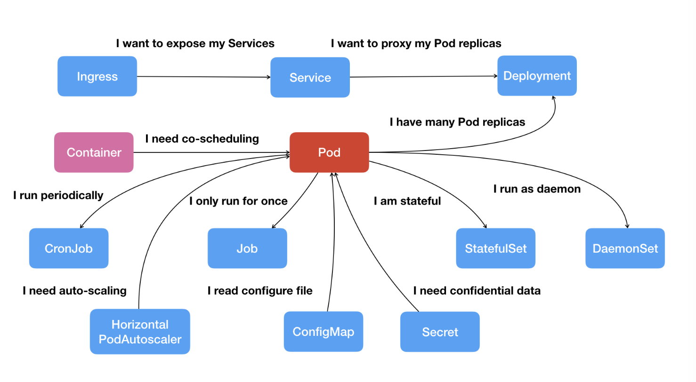
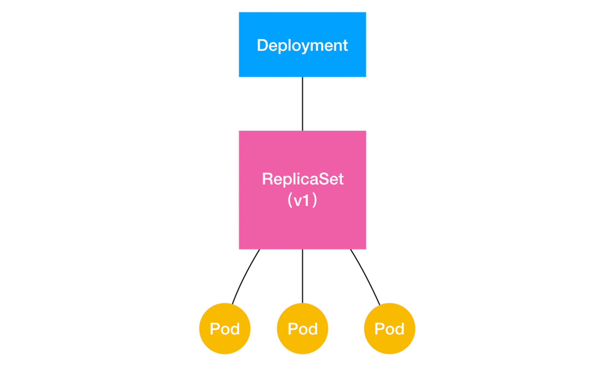
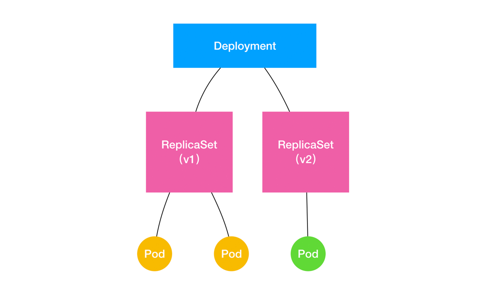

[TOC]
容器
容器- Container，容器其实是一种沙盒技术。沙盒就是能够像一个集装箱一样，把你的应用“装”起来的技术。这样，应用与应用之间，就因为有了边界而不至于相互干扰；而被装进集装箱的应用，也可以被方便地搬来搬去

namespace
命名空间。Namespace 是 Linux 内核的一项功能，该功能对内核资源(进程 ID、主机名、用户 ID、文件名、网络访问和进程间通信等相关资源)进行隔离，使得进程都可以在单独的命名空间中运行，并且只可以访问当前命名空间的资源。创建容器进程时，指定了这个进程所需要启用的一组 Namespace 参数。这样，容器就只能“看”到当前 Namespace 所限定的资源、文件、设备、状态，或者配置。而对于宿主机以及其他不相关的程序，它就完全看不到了。容器，其实是一种特殊的进程而已。相当于给进程盖了一间小板房，这样就实现了系统全局资源和进程局部资源的隔离。
cgroups
全称是 Linux Control Group， 用来实现对进程的 CPU、内存等资源的优先级和配额限制。限制一个进程组能够使用的资源上限，包括 CPU、内存、磁盘、网络带宽等等。相当于给进程的小板房加了一个天花板。
chroot
chroot 它可以更改进程的根目录，也就是限制访问文件系统，创建一份完全独立的文件系统，相当于给进程的小板房铺上了地砖。
创建一个容器
- 启用 Linux Namespace 配置。
- 设置指定的 Cgroups 参数。
- 切换进程的根目录（Change Root）。
与虚拟机对比

虚拟机的工作原理，名为 Hypervisor 的软件是虚拟机最主要的部分。它通过硬件虚拟化功能，模拟出了运行一个操作系统需要的各种硬件，比如 CPU、内存、I/O 设备等等。然后，它在这些虚拟的硬件上安装了一个新的操作系统，即 Guest OS。这样，用户的应用进程就可以运行在这个虚拟的机器中，它能看到的自然也只有 Guest OS 的文件和目录，以及这个机器里的虚拟设备。这就是为什么虚拟机也能起到将不同的应用进程相互隔离的作用。

镜像
其实我们在其他场合中也曾经见到过“镜像”这个词，比如最常见的光盘镜像，重装电脑时使用的硬盘镜像，还有虚拟机系统镜像。这些“镜像”都有一些相同点：只读，不允许修改，以标准格式存储了一系列的文件，然后在需要的时候再从中提取出数据运行起来。 容器技术里的镜像也是同样的道理。容器的镜像封装了应用程序以及它运行所需要的所有依赖。它还有一个更为专业的名字，叫作：rootfs（根文件系统）：挂载在容器根目录上、用来为容器进程提供隔离后执行环境的文件系统。rootfs 只是一个操作系统所包含的文件、配置和目录，并不包括操作系统内核。rootfs 只包括了操作系统的“躯壳”，并没有包括操作系统的“灵魂”。同一台机器上的所有容器，都共享宿主机操作系统的内核
由于 rootfs 里打包的不只是应用，而是整个操作系统的文件和目录，也就意味着，应用以及它运行所需要的所有依赖，都被封装在了一起。正是由于 rootfs 的存在，容器才有了一个被反复宣传至今的重要特性：一致性。打通了应用在本地开发和远端执行环境之间难以逾越的鸿沟。
镜像是容器静态的定义，容器是镜像运行时的实体

UnionFS
联合文件系统(Union File System)，最主要的功能是将多个不同位置的目录联合挂载（union mount）到同一个目录下。比如，我现在有两个目录 A 和 B，它们分别有两个文件：
$ tree
.
├── A
│ ├── a
│ └── x
└── B
├── b
└── x
然后，我使用联合挂载的方式，将这两个目录挂载到一个公共的目录 C 上：
$ mkdir C
$ mount -t aufs -o dirs=./A:./B none ./C
这时，我再查看目录 C 的内容，就能看到目录 A 和 B 下的文件被合并到了一起：
$ tree ./C
./C
├── a
├── b
└── x
文件联合系统是docker实现镜像的基本原理，太复杂了还没搞懂
Docker
Docker is an open platform for developing, shipping, and running applications. Docker enables you to separate your applications from your infrastructure so you can deliver software quickly. With Docker, you can manage your infrastructure in the same ways you manage your applications. By taking advantage of Docker’s methodologies for shipping, testing, and deploying code, you can significantly reduce the delay between writing code and running it in production. Docker 是一个用于开发、发布和运行应用程序的开放平台。Docker 使您能够将应用程序与基础架构分离，以便快速交付软件。借助 Docker，您可以像管理应用程序一样管理基础架构。通过利用 Docker 的方法来交付、测试和部署代码，可以显著减少编写代码和在生产环境中运行代码之间的延迟。
Docker provides the ability to package and run an application in a loosely isolated environment called a container. The isolation and security lets you run many containers simultaneously on a given host. Containers are lightweight and contain everything needed to run the application, so you don’t need to rely on what’s installed on the host. You can share containers while you work, and be sure that everyone you share with gets the same container that works in the same way. Docker 提供了在容器中打包和运行应用程序的功能。隔离和安全性允许您在给定主机上同时运行多个容器。容器是轻量级的，包含运行应用程序所需的一切，因此无需依赖主机上安装的内容。您可以在工作时共享容器，并确保与您共享的每个人都能获得以相同方式工作的相同容器。
Docker是一种开源平台，用于开发、交付和运行应用程序。它利用容器化技术，使得开发者能够将应用程序及其所有依赖项打包到一个称为容器的独立单元中。这个容器包含了应用程序的代码、运行时、系统工具、库以及设置，确保应用程序能够在不同的环境中以一致的方式运行。Docker 是一种容器技术的实现，提供了工具和平台，使容器更易于创建和管理
Docker架构

- Docker client：客户端，用户使用的
- Docker daemon：守护进程，负责构建、运行和分发Docker 容器等，管理docker容器的
- Registry：镜像仓库
Docker 使用客户端-服务端架构 客户端与 Docker 守护程序通信，后者负责构建、运行和分发 Docker 容器的繁重工作。Docker 客户端和守护程序可以在同一系统上运行，也可以将 Docker 客户端连接到远程 Docker 守护程序。Docker 客户端和守护程序使用 REST API、UNIX 套接字或网络接口进行通信。
Docker命令
Docker 提供了许多命令，用于管理容器、镜像、网络等方面的各种操作。以下是一些常用的 Docker 命令：
-
容器生命周期管理：
docker run: 运行一个容器。docker start: 启动已停止的容器。docker stop: 停止一个运行中的容器。docker restart: 重启一个容器。docker pause: 暂停容器的所有进程。docker unpause: 恢复容器的所有进程。docker rm: 删除一个或多个容器。
-
容器信息查看：
docker ps: 列出运行中的容器。docker ps -a: 列出所有容器，包括停止的。docker inspect: 查看容器详细信息。
-
镜像管理：
docker images或docker image ls: 列出本地镜像。docker pull: 从远程仓库拉取镜像。docker rmi: 删除一个或多个本地镜像。
-
构建和提交镜像：
docker build: 根据 Dockerfile 构建镜像。docker commit: 提交容器为新的镜像。
-
容器日志和执行：
docker logs: 查看容器的日志。docker exec: 在运行中的容器中执行命令。
-
网络：
docker network ls: 列出 Docker 网络。docker network inspect: 查看网络详细信息。
-
其他常用命令：
-
docker version: 显示 Docker 版本信息。 -
docker info: 显示 Docker 系统信息。 -
docker-compose: 使用 Docker Compose 工具。
-
使用Docker运行一个应用
将一个应用运行在docker中，需要两步
- 构建docker镜像
- 使用docker运行
Docker中制作容器镜像使用的是Dockerfile
Dockerfile介绍
Docker can build images automatically by reading the instructions from a Dockerfile. A Dockerfile is a text document that contains all the commands a user could call on the command line to assemble an image.
Docker 可以通过读取“Dockerfile”中的指令自动构建镜像。 “Dockerfile”是一个文本文档，其中包含用户可以在命令行上调用来构建镜像的所有命令。Dockerfile 是用于构建 Docker 镜像的脚本文件,语法的简单介绍如下：
-
FROM： 指定基础镜像，即构建新镜像所基于的镜像。通常是操作系统或者包含运行时环境的基础镜像。DockerfileCopy code FROM openjdk:11 -
WORKDIR： 设置容器内的工作目录，即后续指令执行的基准目录。DockerfileCopy code WORKDIR /app -
COPY或ADD： 将本地文件或目录复制到容器中。COPY用于复制本地文件，而ADD不仅复制文件，还支持 URL 和解压缩。DockerfileCopy code COPY src/ /app/src -
RUN： 在容器内执行命令，通常用于安装软件包、更新系统、配置环境等。DockerfileCopy code RUN apt-get update && apt-get install -y some-package -
EXPOSE： 指定容器监听的网络端口。该指令并不会实际映射或打开端口，仅作为文档描述。DockerfileCopy code EXPOSE 8080 -
CMD或ENTRYPOINT： 定义容器启动时执行的命令。CMD用于指定默认的执行命令，ENTRYPOINT用于指定容器启动时运行的可执行文件。DockerfileCopy code CMD ["java", "-jar", "app.jar"] -
ENV： 设置环境变量，用于配置容器内部的环境。DockerfileCopy code ENV JAVA_HOME /usr/lib/jvm/java-11-openjdk -
VOLUME： 创建一个挂载点，用于让容器与主机或其他容器共享数据。DockerfileCopy code VOLUME /data -
USER： 设置运行时的用户名或 UID，并切换到该用户。DockerfileCopy code USER appuser -
ARG： 定义构建时传递给镜像的参数。DockerfileCopy code ARG VERSION=latest
步骤
-
建一个springboot项目，随便写一个接口
package com.zt.study.docker.study.controller; import org.springframework.web.bind.annotation.RequestMapping; import org.springframework.web.bind.annotation.RestController; /** * @author zhengtao on 2023/12/2 */ @RestController public class TestController { @RequestMapping("/hello") public String helloWorld() { return "hello world"; } } -
编写Dockerfile文件
#使用 OpenJDK 8 作为基础镜像 FROM openjdk:8 # 设置工作目录 WORKDIR /java # 复制文件 COPY *.jar /java/docker-study.jar # 暴露端口 EXPOSE 8080 # 启动命令 CMD ["java","-jar","/java/docker-study.jar"]
将jar文件和Dockerfile文件放在linux上同一层级
- 使用docker build命令打包镜像
# -t 为命名，.代表在此层目录找Dockerfile
docker build -t docker-study .

-
使用docker run命名运行容器
# -d 代表在后台运行，-p代表暴露端口，即将容器的端口 8080 发布到本机上的8080 docker run -dp 127.0.0.1:8080:8080 docker-study -
使用docker ps看是否启动成功

也可以使用curl http://localhost:8080/hello验证

-
可以将这个镜像推到docker hub中https://hub.docker.com/
先在自己的仓库中新建一个docker-study仓库
# 登录到你自己的docker hub账号，比如我的wzgl998877 docker login -u YOUR-USER-NAME # 把镜像命名修改为你自己的镜像名称 docker tag getting-started YOUR-USER-NAME/getting-started # 推送到docker hub docker push YOUR-USER-NAME/getting-started
制作一条流水线
Kubernetes
概念
Kubernetes 是一个可移植、可扩展的开源平台，用于管理容器化的工作负载和服务，可促进声明式配置和自动化。 Kubernetes 拥有一个庞大且快速增长的生态，其服务、支持和工具的使用范围相当广泛。
Kubernetes 这个名字源于希腊语，意为“舵手”或“飞行员”。k8s 这个缩写是因为 k 和 s 之间有八个字符的关系。
Kubernetes 是一个容器编排平台和集群管理系统
Kubernetes 为你提供：
-
服务发现和负载均衡
Kubernetes 可以使用 DNS 名称或自己的 IP 地址来暴露容器。 如果进入容器的流量很大， Kubernetes 可以负载均衡并分配网络流量，从而使部署稳定。
-
存储编排
Kubernetes 允许你自动挂载你选择的存储系统，例如本地存储、公共云提供商等。
-
自动部署和回滚
你可以使用 Kubernetes 描述已部署容器的所需状态， 它可以以受控的速率将实际状态更改为期望状态。 例如，你可以自动化 Kubernetes 来为你的部署创建新容器， 删除现有容器并将它们的所有资源用于新容器。
-
自动完成装箱计算
你为 Kubernetes 提供许多节点组成的集群，在这个集群上运行容器化的任务。 你告诉 Kubernetes 每个容器需要多少 CPU 和内存 (RAM)。 Kubernetes 可以将这些容器按实际情况调度到你的节点上，以最佳方式利用你的资源。
-
自我修复
Kubernetes 将重新启动失败的容器、替换容器、杀死不响应用户定义的运行状况检查的容器， 并且在准备好服务之前不将其通告给客户端。
-
密钥与配置管理
Kubernetes 允许你存储和管理敏感信息，例如密码、OAuth 令牌和 SSH 密钥。 你可以在不重建容器镜像的情况下部署和更新密钥和应用程序配置，也无需在堆栈配置中暴露密钥。
-
批处理执行 除了服务外，Kubernetes 还可以管理你的批处理和 CI（持续集成）工作负载，如有需要，可以替换失败的容器。
-
水平扩缩 使用简单的命令、用户界面或根据 CPU 使用率自动对你的应用进行扩缩。
-
IPv4/IPv6 双栈 为 Pod（容器组）和 Service（服务）分配 IPv4 和 IPv6 地址。
-
为可扩展性设计 在不改变上游源代码的情况下为你的 Kubernetes 集群添加功能。
Kubernetes 不仅仅是一个编排系统，实际上它消除了编排的需要。 编排的技术定义是执行已定义的工作流程：首先执行 A，然后执行 B，再执行 C。 而 Kubernetes 包含了一组独立可组合的控制过程，可以持续地将当前状态驱动到所提供的预期状态。 你不需要在乎如何从 A 移动到 C，也不需要集中控制，这使得系统更易于使用且功能更强大、 系统更健壮，更为弹性和可扩展。
架构

k8s中，有两个主要的组件集合，分别是Control Plane（控制平面）和Data Plane（数据平面）。它们协同工作以管理和运行容器化应用程序。集群里的计算机被称为“节点”（Node），可以是实机也可以是虚机，少量的节点用作控制面来执行集群的管理维护工作，其他的大部分节点都被划归数据面，用来跑业务应用，控制面的节点在 Kubernetes 里叫做 Master Node，一般简称为 Master，它是整个集群里最重要的部分，可以说是 Kubernetes 的大脑和心脏。 数据面的节点叫做 Worker Node，一般就简称为 Worker 或者 Node，相当于 Kubernetes 的手和脚，在 Master 的指挥下干活。
- Control Plane（控制平面）:
- 作用： 控制平面是负责管理整个Kubernetes集群的核心组件集合。做出全局决策（例如，调度），以及检测和响应集群事件。它们决策何时启动、停止和重新调度应用程序容器，以及维护集群的期望状态。控制平面组件确保系统处于所需的状态，并对集群中的各种事件做出响应。
- 核心组件：
- kube-apiserver：是整个 Kubernetes 系统的唯一入口，它对外公开了一系列的 RESTful API，并且加上了验证、授权等功能，所有其他组件都只能和它直接通信，可以说是 Kubernetes 里的联络员
- etcd： 是一个高可用的分布式 Key-Value 数据库，用来持久化存储系统里的各种资源对象和状态，相当于 Kubernetes 里的配置管理员。注意它只与 apiserver 有直接联系，也就是说任何其他组件想要读写 etcd 里的数据都必须经过 apiserver。
- kube-scheduler： 负责容器的编排工作，检查节点的资源状态，把 Pod 调度到最适合的节点上运行，相当于部署人员。
- kube-controller-manager：负责维护容器和节点等资源的状态，实现故障检测、服务迁移、应用伸缩等功能，相当于监控运维人员
- Data Plane（数据平面）:
- 作用： 数据平面负责实际运行应用程序容器，并处理它们之间的网络通信。当应用程序容器接收到请求时，数据平面确保请求得到满足，并将响应返回给请求方。
- 核心组件：
- kubelet：kubelet 是 Node 的代理，在每个Node上运行，负责管理 Node 相关的绝大部分操作，在每个节点上运行，负责管理该节点上的Pod和容器，Node 上只有它能够与 apiserver 通信，实现状态报告、命令下发、启停容器等功能，相当于是 Node 上的一个小管家。
- kube-proxy：它是 Node 的网络代理，在每个节点上运行，维护网络规则并处理集群内部的网络通信。它使得Pod能够相互通信，并提供负载均衡。相当于是专职的小邮差。
- container-runtime：使 Kubernetes 能够有效运行容器的基本组件。它负责管理 Kubernetes 环境中容器的执行和生命周期。是真正干活的苦力。常见的container-runtime有docker（早期k8s默认）、Containerd（由docker公司开发的，现在广泛使用）、CRI-O （Red Hat 团队开发的容器运行时，专门为 Kubernetes 而设计）
- 插件：
- DNS ：它在 Kubernetes 集群里实现了域名解析服务，能够让我们以域名而不是 IP 地址的方式来互相通信，是服务发现和负载均衡的基础。由于它对微服务、服务网格等架构至关重要，所以基本上是 Kubernetes 的必备插件。
- Dashboard ：就是仪表盘，为 Kubernetes 提供了一个图形化的操作界面，非常直观友好，虽然大多数 Kubernetes 工作都是使用命令行 kubectl，但有的时候在 Dashboard 上查看信息也是挺方便的。
总体而言，Control Plane是Kubernetes集群的大脑，负责决策和管理集群状态，而Data Plane是实际运行应用程序容器的地方，负责处理应用程序的网络通信。这种分离使得Kubernetes具有高度的可扩展性和灵活性。
容器是一种沙盒技术**。Docker** 是一种容器技术的实现，提供了工具和平台，使容器更易于创建和管理。Kubernetes 是一个容器编排平台和集群管理系统,Kubernetes 又用到了docker来管理容器的执行和生命周期
安装k8s
可以通过kubeadm安装k8s
-
安装kubeadm ， yum install -y kubeadm kubelet kubectl
如果报这种错，error execution phase preflight: [preflight] Some fatal errors occurred: [ERROR FileContent–proc-sys-net-bridge-bridge-nf-call-iptables]: /proc/sys/net/bridge/bridge-nf-call-iptables contents are not set to 1 [preflight] If you know what you are doing
编辑 vim /etc/sysctl.conf 加上
net.bridge.bridge-nf-call-iptables = 1 net.ipv4.ip_forward = 1
-
启动kubeadm，
-
kubeadm init –pod-network-cidr=10.244.0.0/16 –image-repository=registry.cn-hangzhou.aliyuncs.com/google_containers
-
会返回一串信息
Your Kubernetes control-plane has initialized successfully!
To start using your cluster, you need to run the following as a regular user:
mkdir -p HOME/.kube sudo cp -i /etc/kubernetes/admin.conf HOME/.kube/config sudo chown (id -u):(id -g) HOME/.kube/config
You should now deploy a pod network to the cluster. Run “kubectl apply -f [podnetwork].yaml” with one of the options listed at: https://kubernetes.io/docs/concepts/cluster-administration/addons/
Then you can join any number of worker nodes by running the following on each as root:
kubeadm join 172.20.21.165:6443 –token zi2uoy.asuxj73ev826r9fu
–discovery-token-ca-cert-hash sha256:10dfdef0ddb9a2c41b45e0ec5c0fffbfecdf0f45062f04620c07a1124883029c -
-
依次执行 mkdir -p HOME/.kube sudo cp -i /etc/kubernetes/admin.conf HOME/.kube/config sudo chown (id -u):(id -g) HOME/.kube/config
-
如果有多台机器，那么去其他的机器上执行kubeadm join 172.20.21.165:6443 –token zi2uoy.asuxj73ev826r9fu
–discovery-token-ca-cert-hash sha256:10dfdef0ddb9a2c41b45e0ec5c0fffbfecdf0f45062f04620c07a1124883029c -
如果只有一台机器则执行kubectl taint nodes –all node-role.kubernetes.io/master-
-
-
安装网络插件
kubectl apply -f https://github.com/flannel-io/flannel/releases/latest/download/kube-flannel.yml
-
kubectl version、kubectl get nodes 检测是否安装成功
kubectl version 后返回 Client Version: version.Info{Major:“1”, Minor:“17”, GitVersion:“v1.17.3”, GitCommit:“06ad960bfd03b39c8310aaf92d1e7c12ce618213”, GitTreeState:“clean”, BuildDate:“2020-02-11T18:14:22Z”, GoVersion:“go1.13.6”, Compiler:“gc”, Platform:“linux/amd64”} Server Version: version.Info{Major:“1”, Minor:“17”, GitVersion:“v1.17.17”, GitCommit:“f3abc15296f3a3f54e4ee42e830c61047b13895f”, GitTreeState:“clean”, BuildDate:“2021-01-13T13:13:00Z”, GoVersion:“go1.13.15”, Compiler:“gc”, Platform:“linux/amd64”}
kubectl get nodes 后返回，若status为ready代表成功
NAME STATUS ROLES AGE VERSION devops1722021165 Ready master 17h v1.17.3
使用k8s部署一个应用
YAML
Kubernetes使用YAML作为主要的配置语言，通过YAML文件来定义和配置各种Kubernetes资源对象，使得用户可以方便地以声明性的方式描述应用程序的结构和部署要求。
- 声明式编程：告诉“机器”你想要的是什么(what)，让机器想出如何去做(how)。如：sql、yaml等
- 命令式编程：命令“机器”如何去做事情(how)，这样不管你想要的是什么(what)，它都会按照你的命令实现。如：大部分编程语言、Dockerfile等
kubectl 常用命令
-
创建资源（例如 Pod、Deployment）：
# 创建或更新 kubectl apply -f <yaml-file> # 只创建 kubectl create -f <yaml-file> -
删除资源：
kubectl delete -f <yaml-file> -
查看资源
- **查看集群信息：**kubectl cluster-info
- 查看集群节点：kubectl get nodes
- **查看所有命名空间：**kubectl get namespaces
- **查看 Pod 列表：**kubectl get pods
- **查看 Deployment 列表：**kubectl get deployments
- **查看 Service 列表：**kubectl get services
- **查看 ConfigMap 列表：**kubectl get configmaps
- **查看 Secret 列表：**kubectl get secrets
- **查看事件：**kubectl get events
-
查看资源详情
- 查看 Pod 详细信息： kubectl describe pod
- 查看 Deployment 详细信息：kubectl describe deployment
- 查看 Service 详细信息：kubectl describe service
- 查看 ConfigMap 详细信息：kubectl describe configmap
- **查看 Secret 详细信息：**kubectl describe secret
-
执行命令进入 Pod：
kubectl exec -it <pod-name> -- /bin/bash
- 在 Pod 中执行命令：
kubectl exec <pod-name> -- <command>
例子
- 先写一个docker-study-deployment.yaml文件
apiVersion: apps/v1 # 使用的 Kubernetes API 版本
kind: Deployment # 定义的 Kubernetes 资源类型为 Deployment
metadata:
name: docker-study-deployment # Deployment 对象的名称
spec:
selector:
matchLabels:
app: docker-study # 选择器，匹配 Pod 的标签以确定控制哪些 Pod
replicas: 2 # 副本数量，指定要运行的 Pod 实例数量
template:
metadata:
labels:
app: docker-study # Pod 模板的标签
spec:
containers:
- name: docker-study # 容器的名称
image: wzgl998877/docker-study # 容器的镜像
ports:
- containerPort: 80 # 容器监听的端口
volumeMounts:
- mountPath: "/usr/share/docker-study/html" # 容器内部的挂载路径
name: docker-study-vol # 卷的名称
volumes:
- name: docker-study-vol # 卷的名称
emptyDir: {} # 创建一个空目录的卷
-
创建对象 kubectl apply -f docker-study-deployment.yaml
-
使用kubectl get pods
NAME READY STATUS RESTARTS AGE docker-study-deployment-695f9b8649-5fsnc 1/1 Running 0 8m3s docker-study-deployment-695f9b8649-d5z56 1/1 Running 0 8m2s
k8s的API对象

有了 Pod 之后，我们希望能一次启动多个应用的实例，这样就需要 Deployment 这个 Pod 的多实例管理器；而有了这样一组相同的 Pod 后，我们又需要通过一个固定的 IP 地址和端口以负载均衡的方式访问它，于是就有了 Service。 可是，如果现在两个不同 Pod 之间不仅有“访问关系”，还要求在发起时加上授权信息。最典型的例子就是 Web 应用对数据库访问时需要 Credential（数据库的用户名和密码）信息。那么，在 Kubernetes 中这样的关系又如何处理呢？ Kubernetes 项目提供了一种叫作 Secret 的对象，它其实是一个保存在 Etcd 里的键值对数据。这样，你把 Credential 信息以 Secret 的方式存在 Etcd 里，Kubernetes 就会在你指定的 Pod（比如，Web 应用的 Pod）启动时，自动把 Secret 里的数据以 Volume 的方式挂载到容器里。这样，这个 Web 应用就可以访问数据库了。
pod
Pod are the smallest deployable units of computing that you can create and manage in Kubernetes. Pod 是您可以在 Kubernetes 中创建和管理的最小的可部署计算单元。pod 是容器的封装,包含一个或多个共享相同网络命名空间和存储卷的容器,是 Kubernetes 的原子调度单位。
pod的状态
- Pending。这个状态意味着，Pod 的 YAML 文件已经提交给了 Kubernetes，API 对象已经被创建并保存在 Etcd 当中。但是，这个 Pod 里有些容器因为某种原因而不能被顺利创建。比如，调度不成功。
- Running。这个状态下，Pod 已经调度成功，跟一个具体的节点绑定。它包含的容器都已经创建成功，并且至少有一个正在运行中。
- Succeeded。这个状态意味着，Pod 里的所有容器都正常运行完毕，并且已经退出了。这种情况在运行一次性任务时最为常见。
- Failed。这个状态下，Pod 里至少有一个容器以不正常的状态（非 0 的返回码）退出。这个状态的出现，意味着你得想办法 Debug 这个容器的应用，比如查看 Pod 的 Events 和日志。
- Unknown。这是一个异常状态，意味着 Pod 的状态不能持续地被 kubelet 汇报给 kube-apiserver，这很有可能是主从节点（Master 和 Kubelet）间的通信出现了问题。
Deployments
多实例控制器，能够让应用永不宕机，多用来发布无状态的应用，用来管理pod。
apiVersion: apps/v1 # 使用的 Kubernetes API 版本
kind: Deployment # 定义的 Kubernetes 资源类型为 Deployment
metadata:
name: docker-study-deployment # Deployment 对象的名称
spec:
selector:
matchLabels:
app: docker-study # 选择器，匹配 Pod 的标签以确定控制哪些 Pod
replicas: 2 # 副本数量，指定要运行的 Pod 实例数量
# 以上为控制器的定义，以下为被控制的对象
template:
metadata:
labels:
app: docker-study # Pod 模板的标签
spec:
containers:
- name: docker-study # 容器的名称
image: wzgl998877/docker-study # 容器的镜像
ports:
- containerPort: 80 # 容器监听的端口
volumeMounts:
- mountPath: "/usr/share/docker-study/html" # 容器内部的挂载路径
name: docker-study-vol # 卷的名称
volumes:
- name: docker-study-vol # 卷的名称
emptyDir: {} # 创建一个空目录的卷
-
selector： 它的作用是“筛选”出要被 Deployment 管理的 Pod 对象，下属字段“matchLabels”定义了 Pod 对象应该携带的 label，它必须和“template”里 Pod 定义的“labels”完全相同
-
replicas：副本数量”的意思，指定要在 Kubernetes 集群里运行多少个 Pod 实例，Pod 的个数大于 2 的时候，就会有旧的 Pod 被删除；反之，就会有新的 Pod 被创建，做到了让应用永不宕机
-
template：以下就是被控制的对象
ReplicaSet
ReplicaSet 是用于维护一组 Pod 副本数量的资源对象。ReplicaSet 的主要目标是确保在集群中始终运行指定数量的相同 Pod 副本，由 Deployment 控制和管理。Deployment操作 ReplicaSet 的个数和属性，进而实现水平扩展 / 收缩和滚动更新。

apiVersion: apps/v1
kind: ReplicaSet
metadata:
name: nginx-set
labels:
app: nginx
spec:
replicas: 3
selector:
matchLabels:
app: nginx
template:
metadata:
labels:
app: nginx
spec:
containers:
- name: nginx
image: nginx:1.7.9
-
水平扩展 / 收缩：修改replicas数量即可，执行命令修改 kubectl scale deployment deployment deployment-name –replicas=4，或者直接修改yaml文件中的replicas值
-
滚动更新：滚动更新是在不中断服务的情况下逐步替换现有的 Pod，以部署新的应用程序版本或配置。通过修改 ReplicaSet 中的 Pod 模板，可以触发滚动更新。ReplicaSet 会逐步替换当前的 Pod，确保在更新的过程中保持服务可用性。
当你修改了 Deployment 里的 Pod 定义之后，Deployment Controller 会使用这个修改后的 Pod 模板，创建一个新的 ReplicaSet，这个新的 ReplicaSet 的初始 Pod 副本数是：0。 然后Deployment Controller 开始将这个新的 ReplicaSet 所控制的 Pod 副本数从 0 个变成 1 个，即：“水平扩展”出一个副本。 紧接着，Deployment Controller 又将旧的 ReplicaSet所控制的旧 Pod 副本数减少一个，即：“水平收缩”成两个副本。 如此交替进行，新 ReplicaSet 管理的 Pod 副本数，从 0 个变成 1 个，再变成 2 个，最后变成 3 个。而旧的 ReplicaSet 管理的 Pod 副本数则从 3 个变成 2 个，再变成 1 个，最后变成 0 个。这样，就完成了这一组 Pod 的版本升级过程。 将一个集群中正在运行的多个 Pod 版本，交替地逐一升级的过程，就是“滚动更新”。
滚动更新的策略：Deployment Controller 还会确保，在任何时间窗口内，只有指定比例的 Pod 处于离线状态。同时，它也会确保，在任何时间窗口内，只有指定比例的新 Pod 被创建出来。这两个比例的值都是可以配置的，默认都是 DESIRED 值的 25%。
spec: selector: matchLabels: app: docker-study replicas: 2 strategy: type: RollingUpdate rollingUpdate: maxSurge: 1 maxUnavailable: 1 minReadySeconds: 60 progressDeadlineSeconds: 600maxSurge 指定的是除了 DESIRED 数量之外，在一次“滚动”中，Deployment 控制器还可以创建多少个新 Pod；而 maxUnavailable 指的是，在一次“滚动”中，Deployment 控制器可以删除多少个旧 Pod。minReadySeconds，定义了新的 Pod 在被认为是可用之前必须运行的最短时间（以秒为单位）。如果设置了
minReadySeconds，Kubernetes 将等待至少这么长时间，然后开始进行下一个 Pod 的更新。progressDeadlineSeconds定义了 Deployment 更新的最长时间。如果更新超过指定的时间，Deployment 将被标记为失败，这有助于避免无限期地等待更新完成的情况。
-
回滚版本
# 查看历史版本 kubectl rollout history deployment/deployment-name # 回滚到对应版本 kubectl rollout undo deployment/deployment-name --to-revision=2 # 回滚到上一个版本 kubectl rollout undo deployment/deployment-name
service
实现了负载均衡和服务发现。Kubernetes 会给它分配一个静态 IP 地址，然后它再去自动管理、维护后面动态变化的 Pod 集合，当客户端访问 Service，它就根据某种策略，把流量转发给后面的某个 Pod。
# 定义一个 Kubernetes Service
apiVersion: v1
kind: Service
# 设置 Service 的元数据，包括名称
metadata:
name: docker-study-svc
# 指定 Service 的规格
spec:
# 选择带有标签 app: docker-study 的 Pod 作为后端
selector:
app: docker-study
# 定义 Service 的端口映射
ports:
-
# Service 暴露的端口
port: 80
# 将流量转发到后端 Pod 的端口
targetPort: 80
# 指定使用的协议（TCP）
protocol: TCP
使用kubectl apply -f docker-study-svc.yaml
发现访问不通service对应的ip
# 2.添加需要加载的模块写入脚本文件
[root@master ~]# cat <<EOF> /etc/sysconfig/modules/ipvs.modules
#!/bin/bash
modprobe -- ip_vs
modprobe -- ip_vs_rr
modprobe -- ip_vs_wrr
modprobe -- ip_vs_sh
modprobe -- nf_conntrack
EOF
# 3.为脚本添加执行权限
[root@master ~]# chmod +x /etc/sysconfig/modules/ipvs.modules
# 4.执行脚本文件
[root@master ~]# /bin/bash /etc/sysconfig/modules/ipvs.modules
# 5.查看对应的模块是否加载成功
[root@master ~]# lsmod | grep -e -ip_vs -e nf_conntrack
nf_conntrack_netlink 49152 0
nfnetlink 20480 3 nf_conntrack_netlink,ip_set
nf_conntrack 155648 5 xt_conntrack,nf_nat,nf_conntrack_netlink,xt_MASQUERADE,ip_vs
nf_defrag_ipv6 24576 2 nf_conntrack,ip_vs
nf_defrag_ipv4 16384 1 nf_conntrack
libcrc32c 16384 4 nf_conntrack,nf_nat,xfs,ip_vs
StatefulSet
StatefulSet 是一种控制器（Controller），用于管理有状态应用的部署
DaemonSet
DaemonSet 的主要作用，是让你在 Kubernetes 集群里，运行一个 Daemon Pod。 这个 Pod 有如下三个特征：
- 这个 Pod 运行在 Kubernetes 集群里的每一个节点（Node）上；
- 每个节点上只有一个这样的 Pod 实例；
- 当有新的节点加入 Kubernetes 集群后，该 Pod 会自动地在新节点上被创建出来；而当旧节点被删除后，它上面的 Pod 也相应地会被回收掉。
它通常用于运行类似于日志收集器、监控代理、网络插件等与节点相关的服务